Investigation · 2026-07-10 · analyze + options only
Testing Command Center — the options, on one page
You asked for a per-project, graphic reading surface over all testing + the KDBP layer, plus a ticket board — everything deep-linked, static, regenerated at checkpoints, local now and deployable later. Four research threads ran, ~40 tools were verified with live commands (not marketing pages), and the top pick survived an adversarial pass. One recommendation below, receipts linked throughout.
1 · Four facts that decide everything
And one piece of very good news: you already own a working prototype. gustify's
e2e.html is a hand-built testing dashboard living in your Cifra shell today — grouped status
tables, run-status chips, screenshot carousels that refresh without rebuilding. It just can't see
pytest, vitest, coverage, or the KDBP layer yet.
{kind=link}
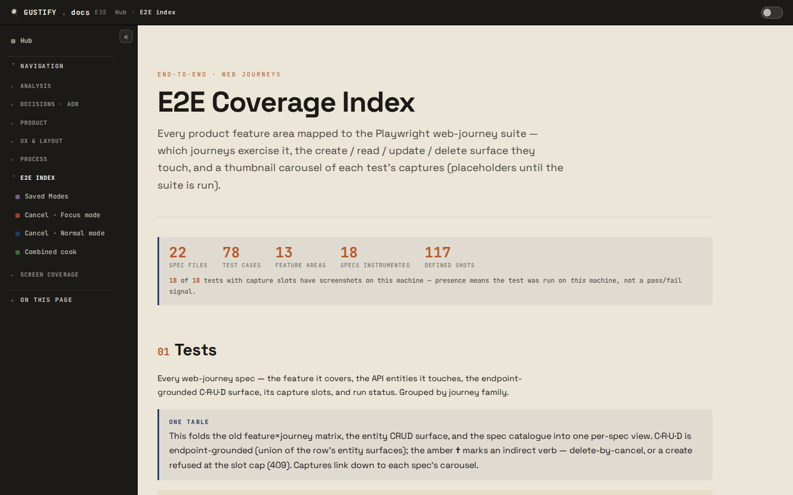
{kind=link}
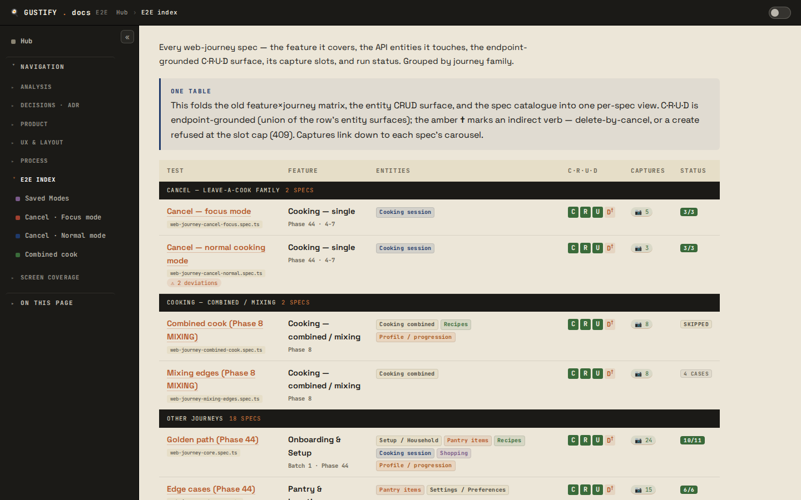
{kind=link}
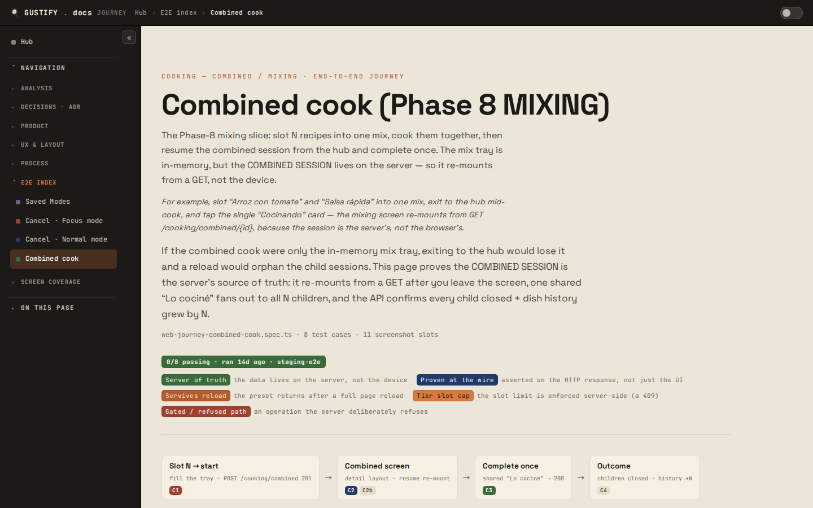
2 · The recommendation — compose, don't adopt
One static command-center subtree inside gustify's docs site (own prefix, e.g.
docs/site/center/), regenerated at checkpoints, rendering only machine-derived data —
with OSS reports linked at the leaves instead of rebuilt. The board is a rendered view of your KDBP files:
zero sync-drift, because the board is the files.
Project altitude. Phase-board summary · test totals (with per-source freshness stamps) · coverage tile (graceful "not enabled" until D1) · latest ledger rows · open-debt count. Every tile links down.
custom · one generator, stdlib Python, Cifra shell
Board: PLAN.json phases × exec/review/commit/push cells as lanes; PENDING rows as ticket
cards by priority. Read-only by design — your gabe commands are the write path. Testing: journey
groups (from journey-groups.json, the single source), pytest/vitest suites (from built-in JUnit XML —
zero new deps), history sparklines from one carried-forward JSONL.
custom · same generator
Per-journey pages (exist today) · living-proof galleries from proof/<feature>/manifest.json ·
capture MP4s. Screenshot carousels keep the live-probe trick: evidence refreshes with no rebuild.
mostly exists · extended
Linked, never rebuilt: coverage.py htmlcov with per-line anchors (file.py.html#t123) ·
istanbul per-file pages · Playwright report / trace viewer or monocart single-file.
adopted OSS — maintained by others, forever
{kind=link}
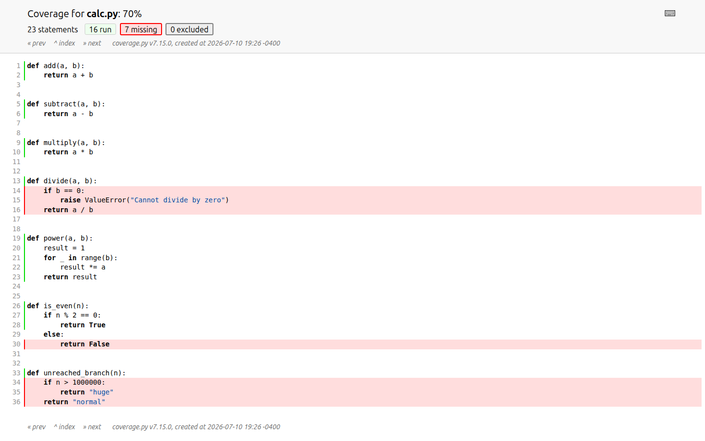

{kind=link}
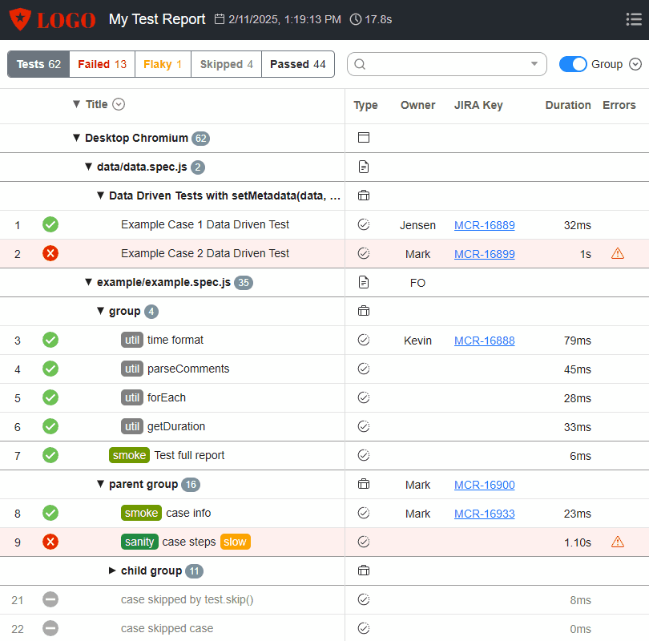
Binding spike rules (what the skeptic forced, and we accepted)
- Machine-derived data only — zero new hand-curated editorial tables. The 395-line hand-authored curation module behind e2e.html is the failure mode, not the template.
- journey-groups.json becomes the single grouping source — killing the duplicated grouping is a spike acceptance criterion.
- IDs derive from names, not run data — deep links survive regeneration (the Playwright/coverage.py discipline).
- Throwaway-priced — the spike proves the shape on gustify; promoting to a suite skill happens at n=2 (gastify) as a rewrite decision, not a port.
- Stop-loss — if the first 3 steps exceed one session, halt and reassess against Allure-as-core.
3 · Testing surface — the three options compared
{kind=link}
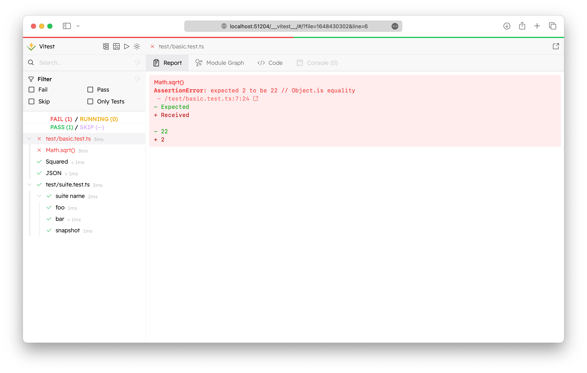
O1 · Wrap-OSS hub
- smallest owned surface; leaf tools maintained forever
- four alien UIs, no cross-cutting rollup
- no KDBP layer, journeys, proof, captures — your differentiators
{kind=link}
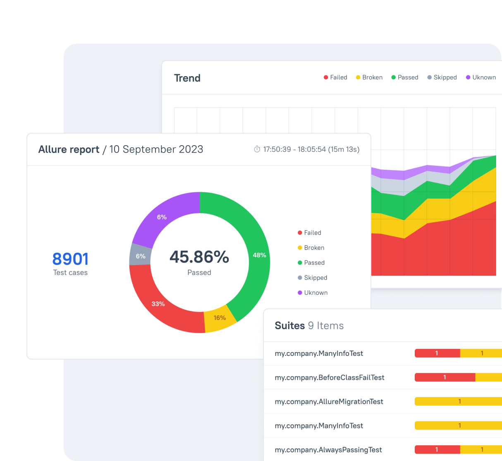
O2 · Allure-as-core
- only official multi-framework drill-down; history included
- blind to KDBP, journey groups, proof sets, MP4s
- single-file collapses deep links to one URL; history carry-forward documented-fragile
- custom hub + board still needed anyway → adds a dep, removes no work
Fit matrix (0–5, scored against your locked constraints)
| Constraint | O1 wrap-OSS | O2 Allure-core | O3 composed |
|---|---|---|---|
| Everything deep-linked | 2 | 1 | 4 (tests) |
| Static, regenerated at checkpoints | 5 | 4 | 5 |
| Local now / deployable later | 5 | 4 | 5 |
| Prefer OSS / build only the glue | 5 | 4 | 4 |
| KDBP altitude (the motivating layer) | 0 | 0 | 4 |
| Progressive disclosure L0→artifact | 1 | 3 | 5 |
| Owned-code burden (5 = least) | 5 | 4 | 2 |
O3's KDBP deep-linking is 4/5 for the testing half now; the KDBP half needs Wave-2 schema enrichment (structured proof links, per-cell timestamps) — flagged as decision D6, not hidden.
4 · The board — three families, one honest picture
Your history already proved double bookkeeping regrows files (that's why KDBP-lite exists). Every tracker below keeps its own database: edit a card there and your files are silently wrong. Only one family has zero drift — rendering the files themselves.
Family A · KDBP-native render ✓ recommended
- zero drift — the board IS the files
- zero infrastructure; deep-links into the same site
- read-only: fine for phase cells (gabe commands are the write path), thin for PENDING re-ordering — see the escape hatch
{kind=link}
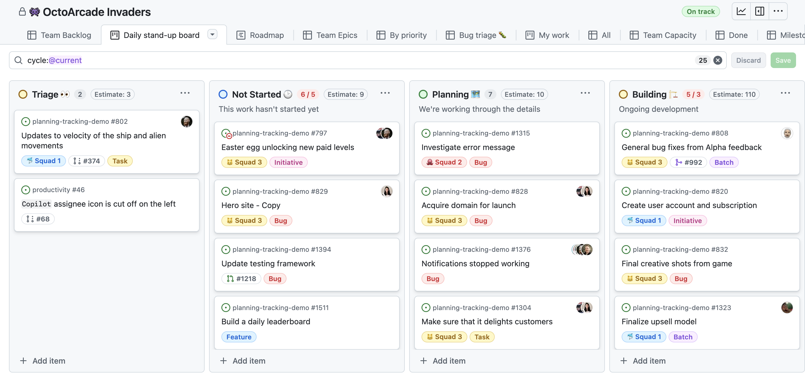
Family C · GitHub Projects v2 escape hatch
- free, drag-drop, same vendor as your repos, disposable mirror
- board state lives server-side, not in the repo; UI edits fork until re-push
{kind=link}
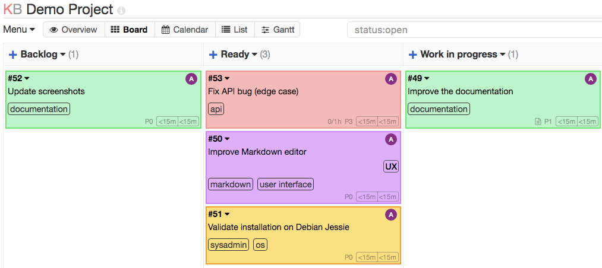
Family B · Kanboard strongest self-hosted
- cheapest possible self-hosted mirror; fully regenerable
- still a second truth + a service to keep alive — for marginal gain over A + C
Ruled out — and why (7 more candidates)
Focalboard — unmaintained by its own README ("this repository is currently not maintained"); last release 2024-06. ✗ dead
Plane — ~12 containers (postgres+redis+rabbitmq+minio+8 services) for one user; AGPL community edition with closed commercial tiers. Great product, absurd footprint here. ✗ footprint
Gitea/Forgejo — lightest self-host and could double as git host, but the kanban boards have no API at all (feature request open since 2021) — a sync script can't even place cards. ✗ no board API
Vikunja — healthy 1-container option, but same family-wide drift problem, no write-back.
WeKan — REST API "not complete yet" per its own docs (board/list creation missing).
Taiga — 9 services, pins postgres 12.3; heavy and slow-moving.
Jira / Trello / Linear — free tiers work but: Jira idle-site deactivation risk; Trello worst export story (US-only, lossy); Linear 250-issue hard cap. All add a vendor for less than GitHub Projects gives you.
{kind=link}
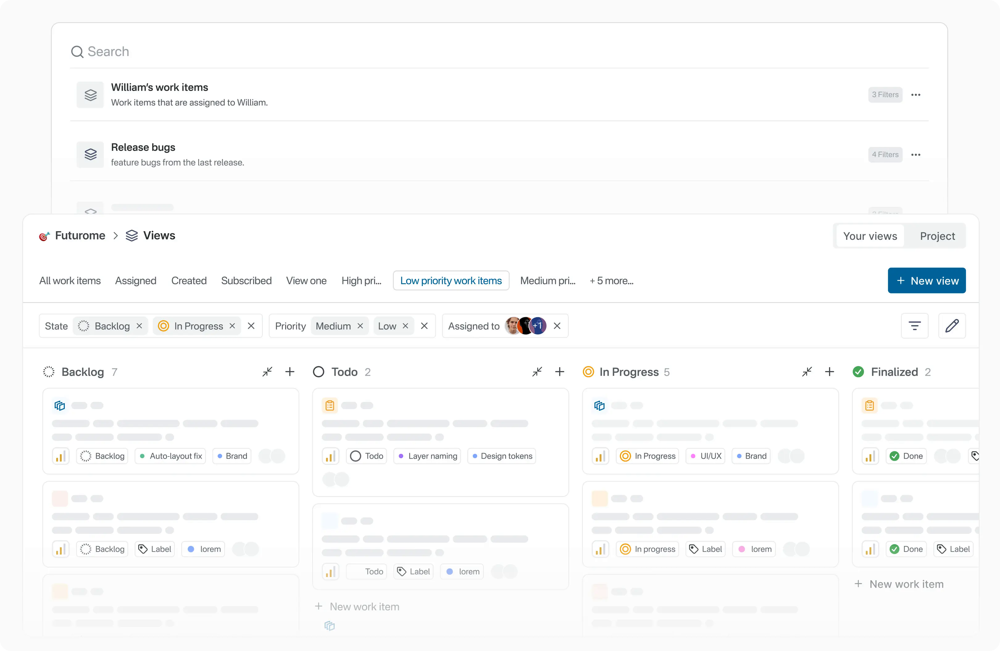
{kind=link}
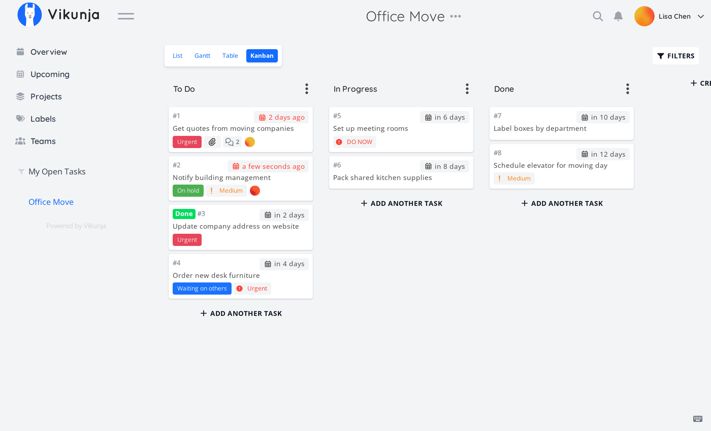
{kind=link}
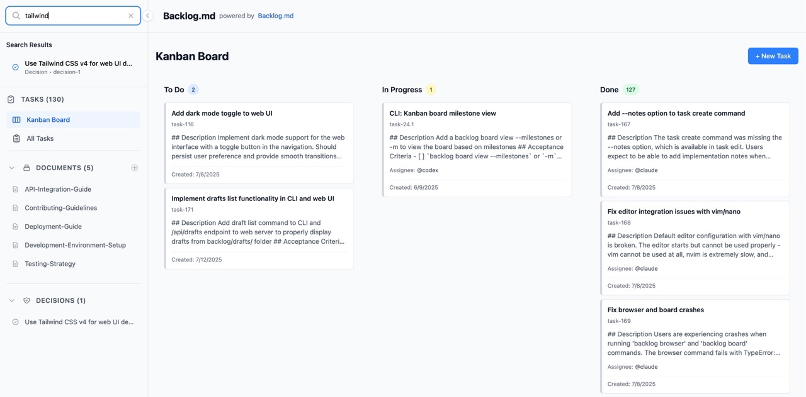
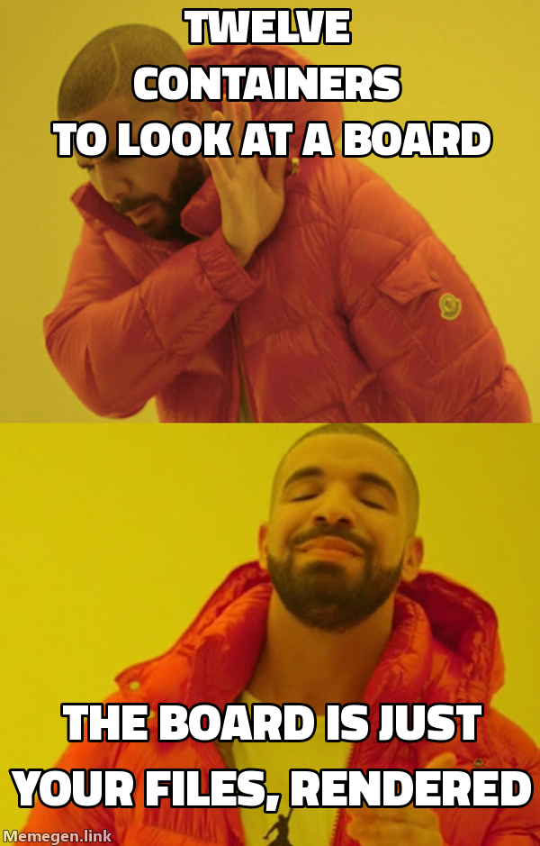
5 · The adversarial pass (house rule: a skeptic argues the opposite)
What the skeptic broke, bent, and conceded
BROKE: the "proven generator" framing (it's 16 days old with 2 defects — we adopt the pattern, fix the defects, drop the badge) · the "everything deep-linked" promise at the KDBP layer this phase (prose proof fields can't be deep-linked until Wave-2 schema work — now decision D6).
BENT: pytest/vitest layers survive only under the anti-curation guardrail · coverage must be an explicit waiver (D1), not folded in · history JSONL gets the same fragility accounting we used against Allure (custody = D3) · host-inside-docs/site needs its own namespace (D4) · the spike is throwaway-priced.
CONCEDED: the skeptic's own steelman for Allure-as-core failed — it can't see the KDBP layer, can't match the live-probe screenshot freshness, and replaces working pages while the custom hub+board remain necessary in every world. Its correct slot is the leaf/runner-up, exactly where the draft put it.
Full review: threads/SKEPTIC-review.md
6 · Your decisions (status as of 2026-07-10, operator round 1)
center/ subtree.New (operator round 1): before any spike runs, the operator asked for a full testing-landscape explainer (kinds of tests, why, infrastructure, gaps, dimension models, navigation + visual language) → see 03-testing-landscape.html.
Next step when you decide: the smallest gustify spike is fully specified in 02-spike-plan.md — 8 steps, each independently verifiable, tests + docs-site only, app code untouched, one-session stop-loss on the first three steps.
7 · Receipts
Everything above traces to a raw thread report with the exact commands/URLs and what they showed:
- T1 — OSS test-dashboard scan (Allure, ReportPortal, Playwright, Vitest, coverage renderers, CTRF, monocart, SaaS)
- T2 — board options (3 families, 14 candidates, health receipts)
- T3 — data-shape inventory (every gustify source file + schema standards)
- T4 — disclosure-pattern catalog (altitude ladders, pattern menu, Cifra shell audit)
- Adversarial review (verdict + 8 mods) · full md record · spike plan